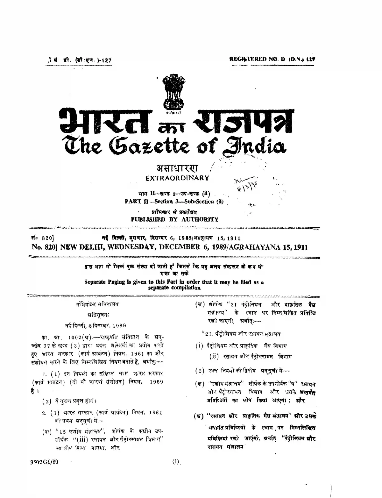
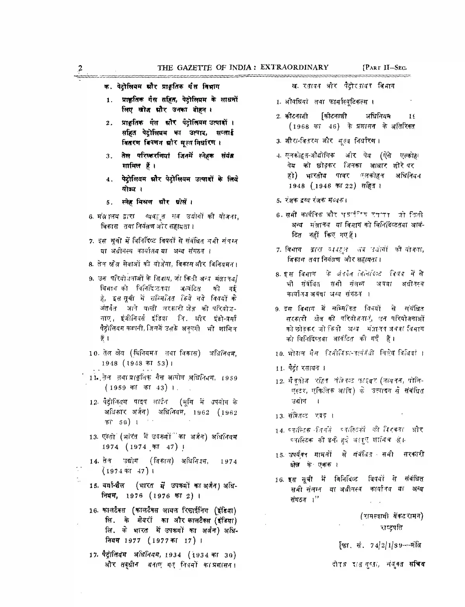
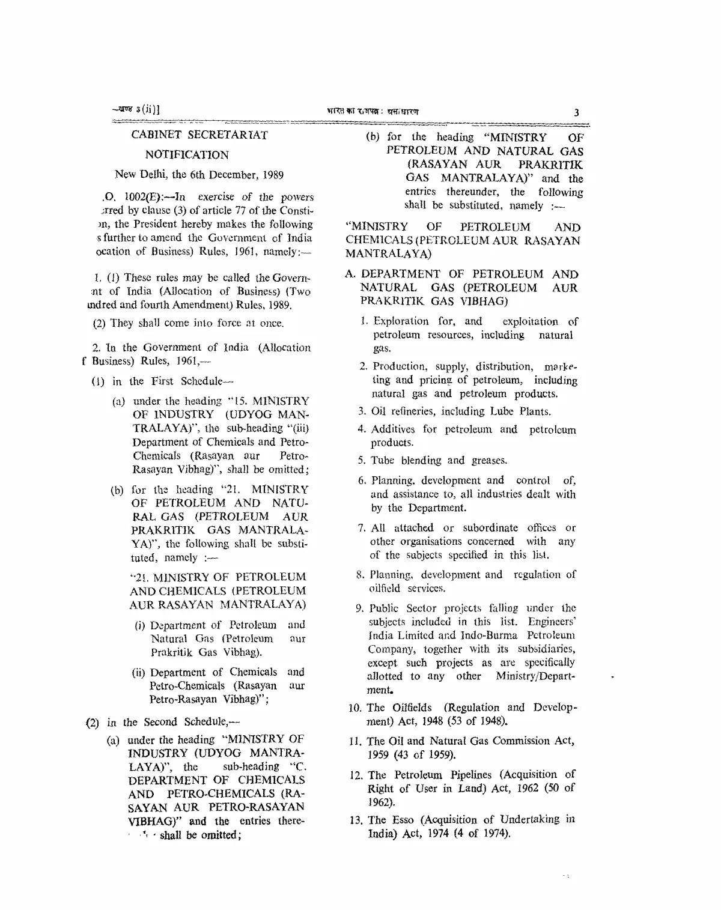
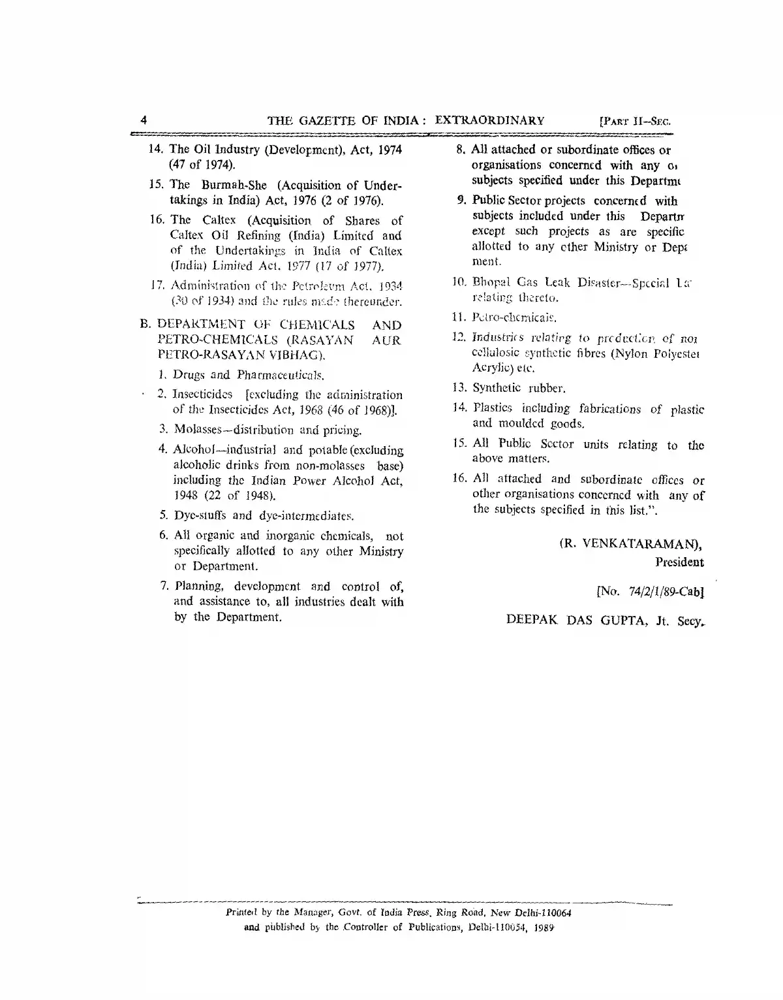

Amendment #204 (S.O. 1002(E), 1989)
4 changes: 2 to the First Schedule, 2 to the Second Schedule. 4 applied
What it did to the ministries
- renamedMinistry of Petroleum and Natural Gas is renamed Ministry of Petroleum and Chemicals change 2, 4 · histories: Petroleum and Chemicals
The order, page by page
Page 1 of 4

Page 2 of 4

Page 3 of 4

1234Schedule 1 › MINISTRY OF INDUSTRY › Department of Chemicals and Petro- Chemicals
applied at schedule 1 › ministry 13 › department iii in the Rules after #204
Schedule 1 › MINISTRY OF PETROLEUM AND NATU- RAL GAS
- 21. MINISTRY OF PETROLEUM AND CHEMICALS
- i. Department of Petroleum and Natural Gas
- ii. Department of Chemicals and Petro-Chemicals
applied at schedule 1 › ministry 19 in the Rules after #204
Schedule 2 › MINISTRY OF INDUSTRY › DEPARTMENT OF CHEMICALS AND PETRO-CHEMICALS
applied at schedule 2 › ministry MINISTRY OF INDUSTRY › department C in the Rules after #204
Schedule 2 › MINISTRY OF PETROLEUM AND NATURAL GAS
- MINISTRY OF PETROLEUM AND CHEMICALS
- A. DEPARTMENT OF PETROLEUM AND NATURAL GAS
- 1. Exploration for, and exploitation of petroleum resources, including natural gas.
- 2. Production, supply, distribution, marketing and pricing of petroleum, including natural gas and petroleum products.
- 3. Oil refineries, including Lube Plants.
- 4. Additives for petroleum and petroleum products.
and 30 more
- 5. Tube blending and greases.
- 6. Planning, development and control of and assistance to, all industries dealt with by the Department.
- 7. All attached or subordinate offices or other organisations concerned with any of the subjects specified in this list.
- 8. Planning, development and regulation of oilfield services.
- 9. Public Sector projects falling under the subjects included in this list. Engineers India Limited and Indo-Burma Petroleum Company, together with its subsidiaries except such projects as are specifically allotted to any other Ministry/Department.
- 10. The Oilfields (Regulation and Development) Act, 1948 (53 of 1948).
- 11. The Oil and Natural Gas Commission Act 1959 (43 of 1959).
- 12. The Petroleum Pipelines (Acquisition of Right of User in Land) Act, 1962 (50 of 1962).
- 13. The Esso (Acquisition of Undertaking in India) Act, 1974 (4 of 1974). 4 THE GAZETTE OF INDIA:
- 14. The Oil Industry (Development), Act, 1974 (47 of 1974).
- 15. The Burmah-She (Acquisition of Undertakings in India) Act, 1976 (2 of 1976).
- 16. The Caltex (Acquisition of Shares of Caltex Oil Refining (India) Limited and of the Undertakings in India of Caltex (India) Limited Act. 1977 (17 of 1977).
- 17. Administration of the Petroleum Act, 1934 (30 of 1934) and the rules made thereunder.
- B. DEPARTMENT OF CHEMICALS AND PETRO-CHEMICALS
- 1. Drugs and Pharmaceuticals.
- 2. Insecticides [excluding the administration of the Insecticides Act, 1968 (46 of 1968)].
- 3. Molasses-distribution and pricing.
- 4. Alcohol-industrial and potable (excluding alcoholic drinks from non-molasses base) including the Indian Power Alcohol Act 1948 (22 of 1948).
- 5. Dye-stuffs and dye-intermediates.
- 6. All organic and inorganic chemicals, not specifically allotted to any other Ministry or Department.
- 7. Planning, development and control of and assistance to, all industries dealt with by the Department. Printed by the Manager, Govt. of India Press EXTRAORDINARY [PART II-SEC.
- 8. All attached or subordinate offices or organisations concerned with any o subjects specified under this Departme
- 9. Public Sector projects concerned with subjects included under this Departm except such projects as are specific allotted to any other Ministry or Depa ment.
- 10. Bhopal Gas Leak Disaster--Special La relating thereto.
- 11. Petro-chemicals.
- 12. Industrics relating to production of noi cellulosic synthetic fibres (Nylon Polyester Acrylic) etc.
- 13. Synthetic rubber.
- 14. Plastics including fabrications of plastic and moulded goods.
- 15. All Public Sector units relating to the above matters.
- 16. All attached and subordinate offices or other organisations concerned with any of the subjects specified in this list.
applied at schedule 2 › ministry MINISTRY OF PETROLEUM AND NATURAL GAS in the Rules after #204
read page break
Page 4 of 4

How this document was read
Edits to the reading
| Date | By | Edit | Before → after |
|---|---|---|---|
| 11 November 2026 | mukundesh | word corrected |
From the Government of India (Allocation of Business) Rules, 1961 and their amendments, as published by the Cabinet Secretariat (cabsec.gov.in), read by orgpedia. The readings of the older scanned gazettes have known gaps.